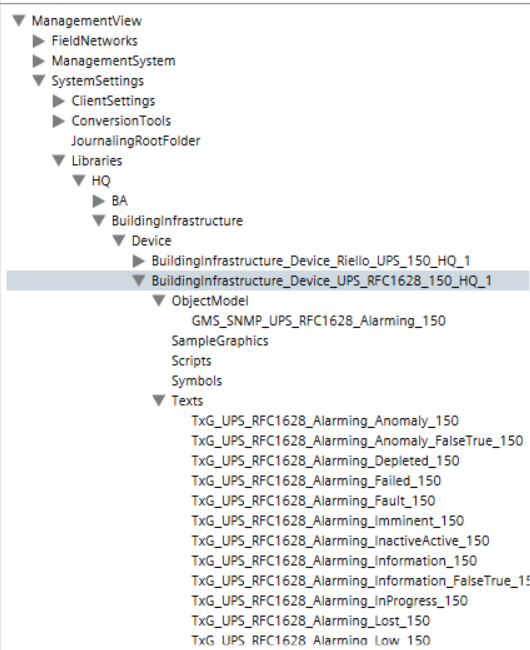

UPS RFC1628 Integration
The UPS RFC1628 allows integrating and representing statuses and events of RFC1628 UPS devices in Desigo CC through SNMP protocol.
Library
The UPS RFC1628 extension installs the Desigo CC library BuildingInfrastructure_Device_UPS_RFC1628_150_HQ_1 that is available at the following path: Libraries > L1-Headquarter > Building Infrastructure > Device.

Dependencies
The UPS RFC1628 extension is designed to depend on the following extension, which will be automatically added, if is not already installed in the system, when the UPS RFC1628 installation feature is selected: